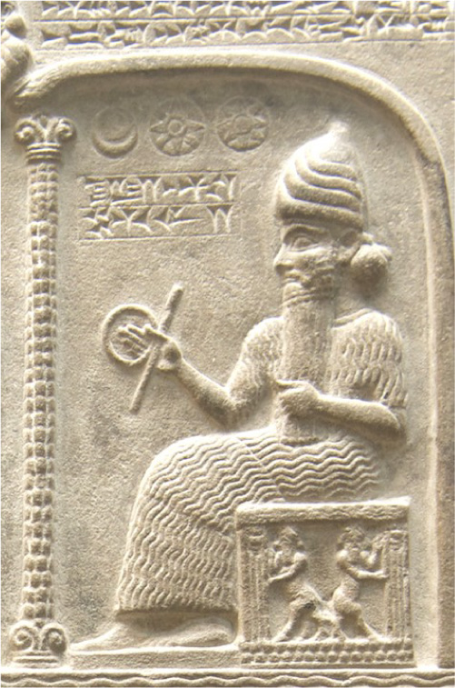

<template>
<div data-hf-id="hf-j8lr" id="s30" data-composition-id="s30" data-width="1920" data-height="1080" data-duration="5.500000000" style="position:relative;width:100%;height:100%">
<section data-hf-id="hf-c6th" class="shot-surface collage theme-light">
<div data-hf-id="hf-xtcz" class="ground-texture" aria-hidden="true" data-layout-ignore=""></div>
<header data-hf-id="hf-g11z" class="frame-header"><span data-hf-id="hf-hjzl"><i data-hf-id="hf-rv09" class="header-dot"></i>une histoire du pouvoir</span><span data-hf-id="hf-rige" class="header-right">07 / 09</span></header>
<div data-hf-id="hf-aeyy" class="kicker">07 — l’autorité devient sacrée</div><div data-hf-id="hf-bdx3" class="copy"><div data-hf-id="hf-5i4w" class="heading-rule" aria-hidden="true"></div><h2 data-hf-id="hf-t43f" class="headline"><span data-hf-id="hf-dvv5" class="title-line">désigné par les dieux</span></h2></div><div data-hf-id="hf-4aao" class="photo-frame"><span data-hf-id="hf-7qec" class="image-index" aria-hidden="true" data-layout-ignore="">01</span></div><div data-hf-id="hf-28w6" class="photo-frame secondary"><span data-hf-id="hf-6jh9" class="image-index" aria-hidden="true" data-layout-ignore="">02</span></div><div data-hf-id="hf-5wqe" class="photo-caption">shamash · détail de tablette · ixe siècle av. n. è. · cc0 / hammurabi devant shamash · xviiie siècle av. n. è. · erin / flickr · cc by 2.0</div>
<footer data-hf-id="hf-1dc7" class="frame-footer"><span data-hf-id="hf-ajp8">qui a inventé les rois ?</span><span data-hf-id="hf-ut0e" class="footer-page">30 / 44</span></footer>
</section>
</div>
<script>window.DocRuntime.mount("s30",{"duration": 5.5, "figure": null, "camera": "reveal", "list": false, "cta": false});</script>
</template>